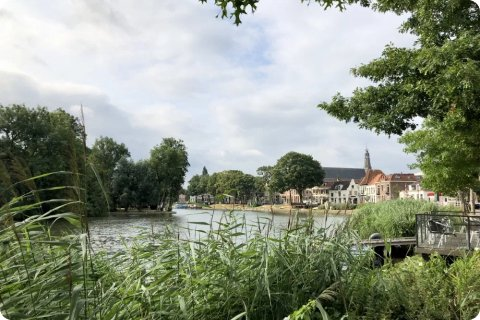
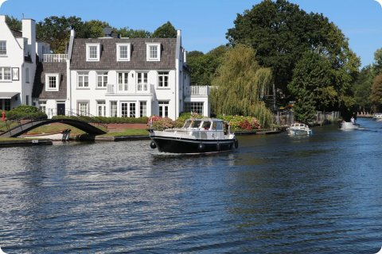
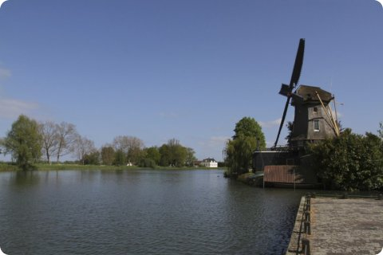
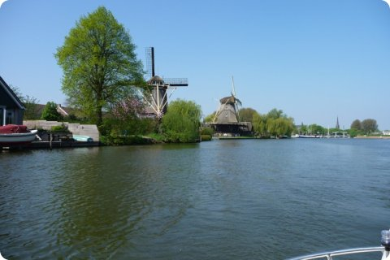

This stretch of the Vecht has small rivers, reed banks and wetlands, home to herons, ducks and other wildlife.
Take a train to Weesp, then rent a canoe or join a boat tour from the harbor to reach the water.
The water is calm enough for beginners, and most rental spots offer a short guided route if you'd rather not go alone.
In spring you can often spot herons fishing along the banks, and swans with their young.

Don't want to get on the water? The towpath along the Vecht between Weesp and Nigtevecht has good views the whole way.

The Vecht winds past old villages like Weesp and Loenen, each an easy stop by train.
Canoe and kayak rentals are common near the smaller river towns.
Loenen and Breukelen have old country houses along the water, best seen from a boat or the towpath.
Many towns along the river have a station nearby, so you can paddle one way and take the train back.


Boat trips run most of the year, but they are far more frequent in summer.
Riverside cafes make a good stop if you are walking instead of cycling.
Bring a light jacket, because it can get windy on open water even on a sunny day.
Plan about two hours for a relaxed canoe trip from Weesp and back.